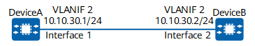

Fault Symptom
In Figure 1, VLANIF 2 on DeviceA and VLANIF 2 on DeviceB are configured with an IP address. Although the two IP addresses are on the same network segment, DeviceA and DeviceB cannot ping each other.
Figure 1 Devices cannot communicate with each other using VLANIF interfaces
Possible Causes
- A VLANIF interface goes down.
- The interfaces (interface 1 and interface 2 in this example) connecting DeviceA and DeviceB are not added to the target VLAN.
- The PVIDs of the interfaces connecting DeviceA and DeviceB are different.